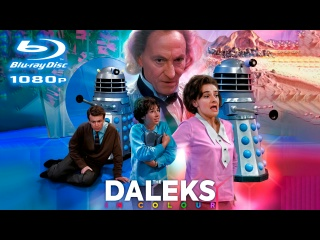
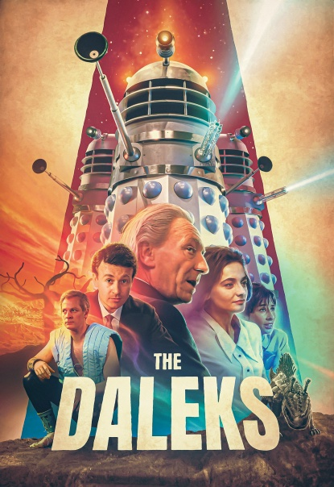

Субтитры: Русские и Английские | |
Субтитры: Русские (RabelProject) |  |
| 1. Мёртвая планета 2. Уцелевшие 3. Побег 4. Засада 5. Экспедиция 6. Испытание 7. Спасение | Сохранились 16mm t/r * Имеется объединенная, укороченная, цветная версия |
|---|
| | |
«Далеки» — вторая веха сериала: ТАРДИС приземляется на планете Скаро, опустошённой ядерной войной. Доктор и спутники сталкиваются с мутантами в металлических корпусах — так рождается главный враг Доктора. Серия закрепила формулу «угроза всему миру» и сделала Далеков символом страха в научной фантастике. Культовый образ дополнен минималистичной эстетикой и нарастающим напряжением без лишних спецэффектов.
  VHS-сет - июнь 1989 |  VHS - февраль 2001 |
|---|---|
 DVD - 30 января 2006 * Версия в нашей группе |  Blu-ray (в цвете) - 19 февраля 2024 * Версия в нашей группе |


